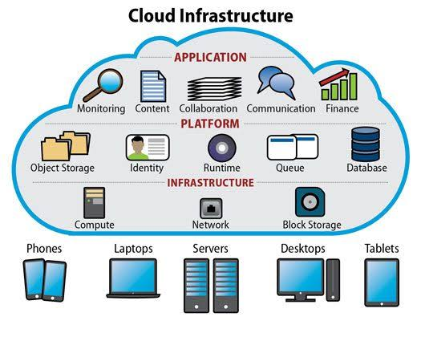

Cloud Computing Basics
How cloud platforms deliver computing power on demand, and how their infrastructure is organized.
Learning relevance: Cloud infrastructure
What is cloud computing?
Cloud computing is the delivery of computing resources such as servers, storage, databases, and networking over the internet, usually on a pay-as-you-go basis. Instead of buying and maintaining hardware, teams rent capacity and scale it up or down as demand changes.
Service models
Cloud services are commonly grouped by how much of the stack the provider manages for you:
| Model | You manage | Provider manages |
|---|---|---|
| IaaS (Infrastructure as a Service) | Operating systems, runtime, applications, data | Virtual machines, storage, networking |
| PaaS (Platform as a Service) | Applications and data | Runtime, middleware, operating system, infrastructure |
| SaaS (Software as a Service) | Configuration and user data | The complete application and everything beneath it |
Cloud infrastructure
Providers organize their infrastructure in layers. A region is a geographic area, such as a country or metropolitan zone. Each region contains several availability zones, which are physically separate data centers with independent power and networking. Deploying across zones lets an application survive the failure of one facility.
Why it matters
- Elasticity: resources expand and contract with real traffic.
- Reliability: replication across zones and regions reduces downtime.
- Cost control: you pay for what you use rather than idle hardware.